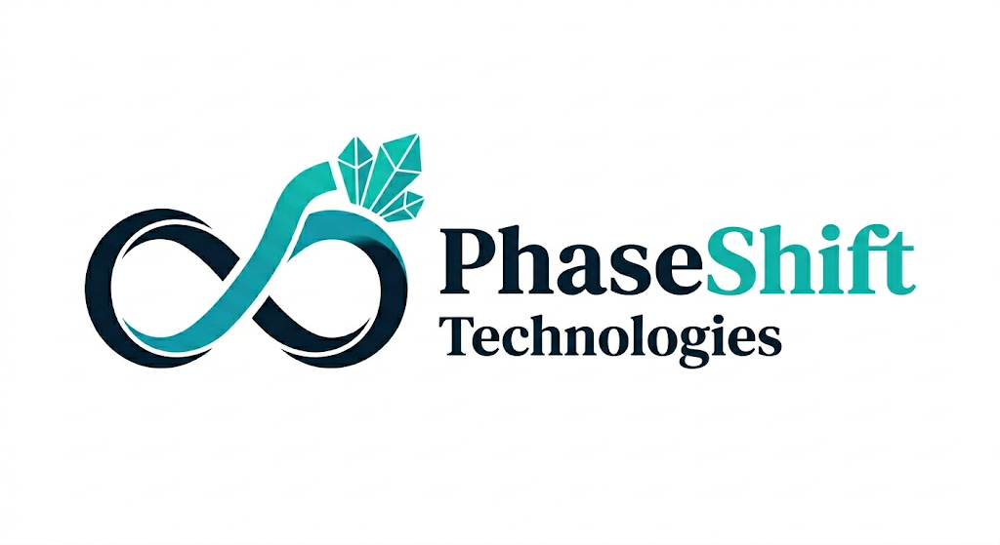

| 顧客側 P/L（標準商用機 1拠点・年間回収量 4,316 kg 基準） | |
|---|---|
| 増産ヨウ素 売上高（グロス 11,782 円/kg × 4,316 kg） | ＋5,085.1 万円 |
| 消耗品・保守（第2層） | ▲1,000.0 万円 |
| 回収量連動プロセス利用料（第3層） | ▲ 863.2 万円 |
| 現場動力費（側流ポンプ・補機） | ▲ 59.7 万円 |
| 顧客側 年間純増粗利（粗利率 62.2%） | ＋3,162.2 万円 |
| 顧客の投資回収期間（税制優遇活用時 約2.2年・試算） | 3.16 年 |
2026年9月末、国内主要生産者から提供を受ける実液で「捕捉量 q × 回収率 R」を測定し、下の帯で機械的に判定する。判定基準は測定前に公開・固定済み。
5社創業。海外の多国籍チームを統率。累計約 4.5億円の調達実績。
同志社大学。温度応答性高分子の発明者（基本特許）。
応用特許①のクレーム設計・回避設計を支援。
材料合成・プロセス検証。実液の初期分析を担当。